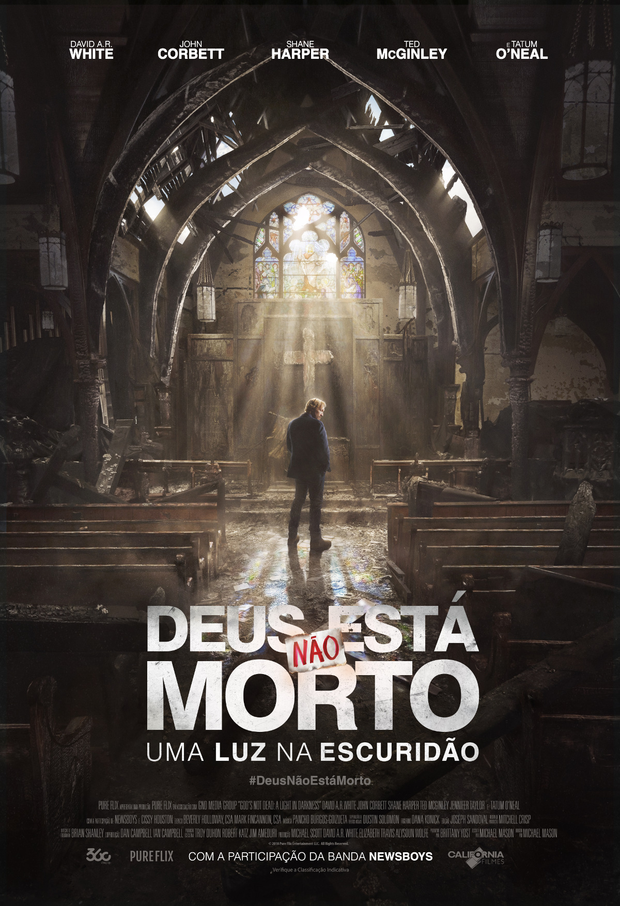

O terceiro filme retrata a um incêndio terrível que atingiu a Igreja de Saint James, devastando a congregação e o Pastor Dave(David A.R. White), a universidade vizinha, a Hadleigh University, usa a tragédia para tentar despejar a congregação de seu campus. Uma batalha legal se instaura entre a igreja e a comunidade, e o Pastor Dave precisa enfrentar seu amigo de longa data Thomas Ellsworth(Ted McGinley), o presidente da universidade. Dave recorre a seu irmão, um advogado ateu, para tentar reerguer a igreja.
Elenco:
Assista ao trailer do Filme: